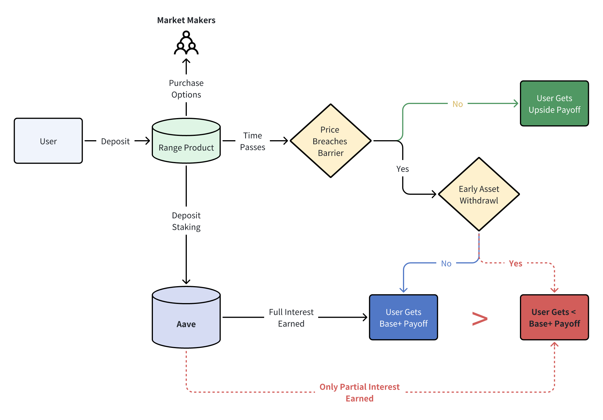

Early Settlement Considerations
Given the wide spectrum of payoff profiles behind structured products, there might be occasional scenarios where a certain product matures (terminates) before the final settlement date. A typical example would be with the Rangebound product, where the underlying price breaches either of the barriers, leading to the product being "knocked-out" and leading to an early termination of the transaction.
However, in our product design, since all of the deposited capital has been re-staked to Aave to generate income, the dApp's stated payoffs & base returns are estimated assuming a 'full' maturity term.

As such, should a trade be 'knocked-out', the user will be offered a decision with regards to their deposited capital. The default option is to leave it in the vault until the 'stated' maturity date, then collect the full deposit plus base returns (staking) as originally agreed ('Blue' outcome in diagram above).
However, in the interest of full transparency and giving full control to the user, the SOFA dAPP will allow for an 'early withdrawal' option should a transaction be 'knocked-out' before maturity. However, in doing so, the user will collect less Base+ returns than originally envisioned, and the final return amount could even be less than the original principal in very rare circumstances ('Red' outcome above).
Such exceptional cases could occur if a trade were to be knocked-out very early (e.g Day 1) in its term, and/or if Aave yields were too low to cover for the option premium spent.
📌 Nevertheless, please remember that early withdrawal is a choice, not an obligation. Users can always choose to leave the capital in the vault until the original maturity, at which point he / she will receive the principal back along with the full Aave interest.